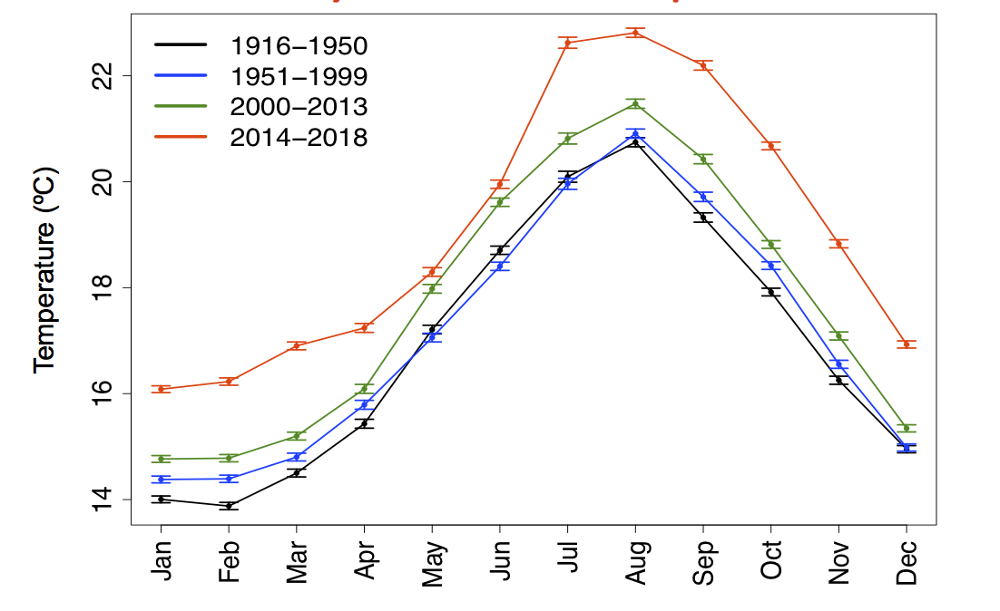
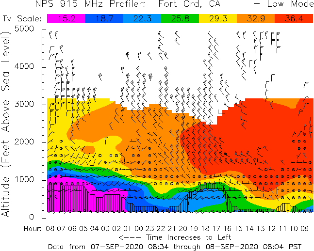
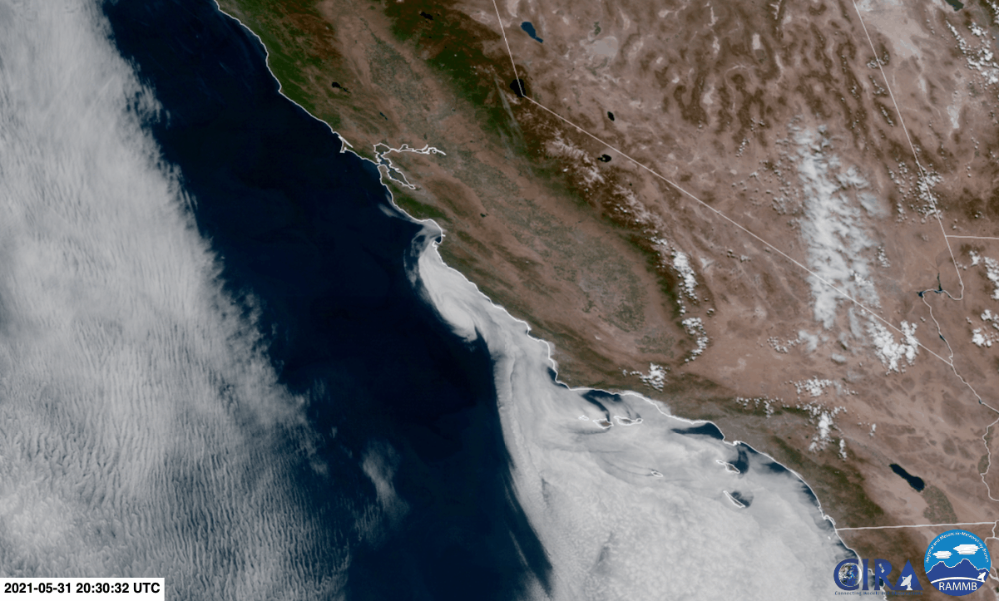

Jesse Robinett Climate of La Jolla California Low Clouds Case Studies The Follies of 90 Day Forecasting More Resources
Aah, low clouds. If you've had the privilege of spending a summer in San Diego, you may have discovered the hard way that it isn't always sunny here, with sheets and sheets of drab, grey, featureless clouds draped across the Pacific as far as the eye can see, with blue sky visible a tantalizingly short distance inland.
In order to know the ways of the mortal foe of Summer sunbathers across SoCal, we must first gain an understanding of the "Marine Air Boundary Layer", colloquially known as "the marine layer".
The primary cause of the robust marine layer in California is our relatively cold summertime sea surface temperatures (SSTs), which average around 66-70ºF in midsummer, as seen below, although there have been significant warm anomalies in recent years. It should be noted than in northern and central California the sea surface temperatures struggle to go beyond 59ºF even in midsummer.

As air flows over the ocean, it cools to around the temperature of the water. Turbulent mixing from winds gradually moves this cold, moist air into a thicker and thicker layer of the atmosphere (think of how blowing on soup stirs it gently). However, as cold air is denser than warm air, there is a limit to how high the air can mix into the relatively warm atmosphere before gravity starts pulling it back down. This layer of oceanic air is what is colloquially called the marine layer, and at it's top there is an abrupt boundary where the airmass suddenly changes from cool and moist to warm and dry as turbulence can mix it no higher.

X-axis time, Y-axis height, color-temperature (Celsius). Notice the sharp jump in temperature.
Most recent time is on the left.
To answer this question, we must first learn about pressure, temperature changes with height, and water vapor
Pressure is simply the force per unit area. In the atmosphere, a great approximation of pressure is the weight of the air above you per square meter times acceleration due to gravity. A helpful analogy is to think about someone placing progressively more blankets on top of you; as more blankets are added, the mass of the blanket pile increases, and so you feel progressively more force per unit area as gravity pulls them down.
Therefore, as you ascend in the atmosphere, less mass per unit area will be above you, and so pressure must decrease
Another important piece of preliminary knowledge is that as air rises, its temperature decreases. As discussed in the pressure section, a rising air bubble gradually experiences progressively lower pressures. Therefore, the air bubble expands to keep its pressure equal to that of the air around it. However, as it expands it must "push against" the walls of its imaginary bubble, and pushing takes energy. That energy cannot come from nothing; in fact, it comes from the temperature of the air bubble decreasing at a rate of roughly 5.5ºF per 1000ft.
All you need to know is that as temperature lowers, less water vapor can exist in the air; any excess must fall out as liquid water.
Armed with this knowledge we may now explain the existence of those pesky clouds in the marine layer. As the marine layer is beng turbulently mixed by wind, air is constantly rising and falling. The air is already almost saturated at the ocean surface, so as it rises and cools it can no longer hold all its water vapor, and so some condenses out to form our ubiquitous marine clouds.

Credit: CIRA-SLIDER
For a more rigorous introduction to the concepts of pressure, temperature changes with height (lapse rates), water vapor, and many other atmospheric sciences topics head to More Resources and check out Atmospheric Science, An Introductory Survey